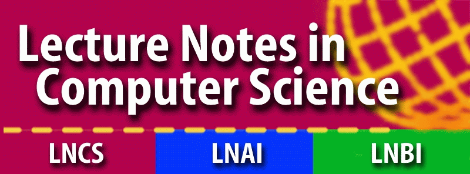
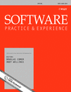

| |
THEMES AND GOALS
The Testing: Academic and Industrial Conference 2010 (TAIC PART
2010) establishes a forum for the publication of papers related to
software testing and analysis. The theme of TAIC PART is
transferring software testing technology from academia to
industry. TAIC PART aims to forge collaborations between industry
and academia. The goals of TAIC PART 2010 include the articulation
of fundamental research questions in the field of software testing
and analysis. TAIC PART also focuses on the practical challenges
that are often faced by software developers in industry.
CALL FOR PAPERS
TAIC PART 2010 solicits papers on, but is not limited to, the
following areas:
- Test Adequacy Criteria
- Test Suite Execution
- Test Coverage Monitoring
- Automated Test Data Generation
- Regression Testing
- Automated Debugging and Fault Localization
- Performance Evaluation
- Static and Dynamic Analysis
- Verification and Validation
- Software Reliability Engineering
- Model-Based Testing
- Testing and Formal Methods
- Testing and Model Checking
- Software Testing Process
- Technology Transfer
SUBMISSIONS
We invite submission of papers of the following types:
- Full papers (16 pages): Original research
- Short papers (8 pages): Experience reports, challenge
papers
- Fast Abstracts, PhD papers, tool papers (4 pages)
Authors should submit a PDF version of their paper through the TAIC
PART 2010 paper submission
site. Papers must be written in English,
and prepared according to Springer's LNCS style.
All papers will undergo a rigorous
review by at least three members of the program committee.
- Original research papers will explore novel software testing ideas
and techniques. These papers should furnish a detailed theoretical or
empirical evaluation of the proposed approach.
- Experience reports should provide practical and generalizable
insights into how to apply and extend existing approaches to
software testing and analysis and will be evaluated with respect to the
significance and generality of the described testing experience.
- Tool papers must focus on the design, implementation, and evaluation
of software testing and analysis tools and will be judged by the
technical merit, novelty, and evaluation of the tool.
- Challenge papers describe a real-world software testing problem for
which academics seek help from industry or vice versa and will be
assessed according to their ability to forge partnerships and
ultimately yield successful solutions.
- PhD papers are for PhD students who are interested in receiving
feedback about dissertation research that is an early stage. There
will be a dedicated PhD session at the conference.
- Fast abstract papers are short papers that describes late breaking
results or works in progress and will be evaluated according to their
ability to generate discussion and suggest interesting areas for
future research.
CONFERENCE PROCEEDINGS


Accepted papers will be published in a volume of the Springer Lecture
Notes in Computer Science series (LNCS) and also available online
on SpringerLink.

SPECIAL ISSUE
Authors of the best accepted papers will be invited to submit extended versions of their papers for publication in a special issue of Software: Practice and Experience.
|

Cumberland Lodge, Windsor, UK
Sponsored by:


|